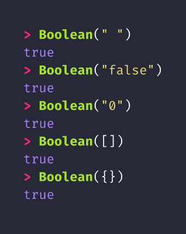
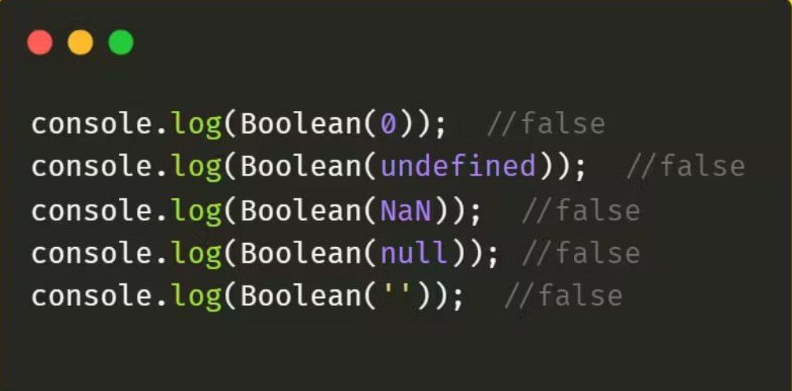

JavaScript
-
If else (Conditionals)
If else va switch case dan JS da asosan malumotni tekshirishda foydalaniladi. if elseda rejalashtirishda foydalaniladi.
If else

Switch case

-
And, or, not
And (&&) ==> va articli bolib bunda ifdagi shartni ikkalasi ham bir hil rost qabul qilsa if qiymati rost boladi.
true + true = true
true + false = false
false + true = false
false + false = false
Or (yoki) ==> yoki articli bolib bunda ifdagi shartni bittasi rost qabul qilsa if qiymati rost boladi.
true + true = true
true + false = true
false + true = true
false + false = false
Not (!) ==> aks articli bolib bunda ifni qiymatini teskarisiga ogiradi.
!true = false
!false = true
-
Truthy va Falsy qiymatlar
Truthy qiymatlar
Falsy qiymatlar
 -
Amaliyot (if else)
1.Foydalanuvchi biror son kiritadi. Agar son musbat bo‘lsa, "Musbat son" deb chiqaring. Agar manfiy bo‘lsa, "Manfiy son" deb chiqaring. Agar son 0 bo‘lsa, "Bu 0" deb chiqaring.
2. Foydalanuvchi havo haroratini kiritadi. Agar harorat 30 dan yuqori bo‘lsa, "Havo issiq" deb chiqaring. Agar 15 dan 30 gacha bo‘lsa, "Havo mo'tadil" deb chiqaring. Agar 15 dan past bo‘lsa, "Havo sovuq" deb chiqaring.
3. Foydalanuvchi biror son kiritadi. Agar son juft bo‘lsa, "Juft son" deb chiqaring. Agar son toq bo‘lsa, "Toq son" deb chiqaring
4. Foydalanuvchi yoshini kiritadi. Agar yosh 18 dan kichik bo‘lsa, "Voyaga yetmagan", agar 18 va undan katta bo‘lsa, "Voyaga yetgan" deb chiqaring.
5. Foydalanuvchidan parolni so‘rang. Agar kiritilgan parol "12345" ga teng bo‘lsa, "Parol to'g'ri", aks holda, "Noto‘g‘ri parol" deb chiqaring.
6. Foydalanuvchi yillik daromadini kiritadi. Soliq quyidagi shkalaga muvofiq hisoblanadi: Daromad 10 milliondan kam bo‘lsa, soliq 5%. 10 milliondan 20 milliongacha bo‘lsa, 10%. 20 milliondan yuqori bo‘lsa, 15%. Hisob-kitobni konsolga chiqarish kerak.
7. Ishchi hafta davomida soatiga $10 maosh oladi, lekin 40 soatdan ortiq ishlasa, har bir qo‘shimcha soat uchun $15 to‘lanadi. Ishchi qancha maosh olishini hisoblang.
8. Bankda mijoz 1 yil davomida hisob raqamiga pul qo‘yadi. Hisoblangan foizlar: Balans 1 milliondan kam bo‘lsa, foiz 3%. 1-5 million oralig‘ida bo‘lsa, foiz 5%. 5 milliondan yuqori bo‘lsa, foiz 7%. Mijozning umumiy balansini hisoblang.
9. Agar haydovchi tezlikni 60 km/soatdan oshirib yuborsa: 80 km/soatgacha bo‘lsa, jarima 100 000 so‘m. 80 km/soatdan yuqori bo‘lsa, jarima 300 000 so‘m. Agar tezlik 60 dan kam bo‘lsa, jarima yo‘q.
10. Foydalanuvchi xarajatlarini kiritadi. Agar daromadi xarajatlardan oshib ketsa, qancha tejab qolgani yoki qancha qarzga botgani haqida xabar bering.
Amaliyot (switch case)
-
Foydalanuvchi hafta kuni raqamini kiritadi (1-7). Shu raqamga mos kun nomini chiqaring.
-
Foydalanuvchi oy raqamini (1-12) kiritadi. Shu raqamga mos oy nomini chiqaring.
-
Foydalanuvchi ikkita son va arifmetik amal (+, -, *, /) tanlaydi. Shu amalni bajarib, natijani chiqaring.
-
Foydalanuvchi oy raqamini kiritadi. Shu raqam asosida qaysi fasl ekanligini chiqaring.
-
Foydalanuvchi xizmat rejasi (1 - Basic, 2 - Standard, 3 - Premium) tanlaydi. Shu rejaga mos xabarni chiqaring.
-
Foydalanuvchi avtomobil dvigatel sig‘imini (1.0, 1.6, 2.0, 2.5) tanlaydi. Shu sig‘imga qarab avtomobil solig‘ini hisoblang: 1.0: 300 000 so‘m 1.6: 500 000 so‘m 2.0: 700 000 so‘m 2.5: 1 000 000 so‘m
-
Foydalanuvchi internet trafik miqdorini tanlaydi: 1 GB: 10 000 so‘m 5 GB: 45 000 so‘m 10 GB: 80 000 so‘m 50 GB: 300 000 so‘m Bundan tashqari, foydalanuvchi qo‘shimcha trafik olishni xohlasa, 1 GB uchun 10 000 so‘mdan hisoblang.
-
Elektr energiyasi iste'mol hajmiga qarab narxni hisoblang: 100 kWh gacha: 250 so‘m/kWh 100-500 kWh: 350 so‘m/kWh 500+ kWh: 500 so‘m/kWh
-
Foydalanuvchi yo‘nalish raqamini (1, 2, 3, 4) tanlaydi. Shu yo‘nalishga mos ravishda to‘xtash joylari ro‘yxatini chiqaring.
-
Foydalanuvchi omonat turini tanlaydi: 1 yil: 10% 2 yil: 12% 5 yil: 15% Foizga qarab foydasini hisoblang.
Uyga Vazifa
-
Uchta tomon uzunligini kiritib, uchburchakning turini aniqlang: Teng tomonli (hamma tomonlar teng). Teng yonli (ikkita tomon teng). Har xil tomonli.
-
Uy narxi $100,000 bo‘lsa, agar foydalanuvchining byudjeti shu miqdorga yetarli bo‘lsa, "Uy olishingiz mumkin" deb chiqaring. Aks holda, qancha mablag‘ yetmayotganini ko‘rsating.
-
Agar havo issiq bo‘lsa (25°C va undan yuqori), "Yengil kiyim kiying". Agar 15°C dan past bo‘lsa, "Qalin kiyim kiying". Aks holda, "O‘rtacha kiyim kiying" deb chiqaring.
-
Talabaning ballarini kiritib, bahosini aniqlang: 90-100: A 80-89: B 70-79: C 60-69: D 60 dan past: F
-
Uchta son kiritiladi. Ularning ichida eng kattasini aniqlang.
-
Foydalanuvchi menyudan taom raqamini tanlaydi (1-3). Shu tanlovga mos taom nomini chiqaring.
-
Foydalanuvchi narx toifasini tanlaydi (1 - Arzon, 2 - O‘rtacha, 3 - Qimmat). Shu toifaga mos chegirma foizini chiqaring.
-
Foydalanuvchi valyuta turi tanlaydi (1 - USD, 2 - EUR, 3 - RUB). Valyuta kursini ekranga chiqaring.
-
Foydalanuvchi mashina markasi raqamini tanlaydi (1 - Chevrolet, 2 - Toyota, 3 - BMW). Shu markani ekranga chiqaring.
-
Foydalanuvchi fan raqamini tanlaydi (1 - Matematika, 2 - Informatika, 3 - Fizika). Shu fanga mos bahoni chiqaring.
-
Foydalanuvchi ob-havo turini kiritadi: Quyoshli: "Kunning zavqini chiqaring!" Yomg‘irli: "Soyabon olib yuring." Qorli: "Issiq kiyining." Shamolli: "Uyingizda qoling."
-
Foydalanuvchi mahsulot nomini tanlaydi: Non: 3000 so‘m Sut: 7000 so‘m Yog‘: 25000 so‘m Shakar: 15000 so‘m
-
Foydalanuvchi taom nomini tanlaydi: Osh: 20 000 so‘m Manti: 25 000 so‘m Shashlik: 15 000 so‘m Sho‘rva: 18 000 so‘m
-
Foydalanuvchi valyuta turini va summani kiritadi. Valyuta turiga qarab boshqa valyutaga ayirboshlash uchun natijani hisoblang. Kurslar: USD → UZS: 12 000 so‘m EUR → UZS: 13 000 so‘m GBP → UZS: 15 000 so‘m RUB → UZS: 150 so‘m Foydalanuvchi 1 valyutani boshqasiga (masalan, USD → EUR) almashtirmoqchi bo‘lsa, avval UZS orqali hisoblash kerak.
-
Foydalanuvchi kvartiraning joylashuvi va maydonini kiritadi. Soliq hisoblash shartlari quyidagicha: Joylashuv: Toshkent: 20 000 so‘m/m² Andijon: 15 000 so‘m/m² Samarqand: 18 000 so‘m/m² Qashqadaryo: 12 000 so‘m/m² Agar kvartira maydoni 100 m² dan katta bo‘lsa, qo‘shimcha 10% soliq qo‘shiladi.
-
Ish Haqi Hisoblash (Bonusli) Masala: Bir kompaniya xodimlarining ish haqi quyidagi shartlarga muvofiq hisoblanadi: Bundan tashqari, xodimning ishi 10 kundan ortiq kech qolishi bo'lsa, har bir kech qolish uchun 50 000 so'm jarima chiqariladi. Foydalanuvchidan tajriba yili va kech qolgan kunlar sonini so'rang va jami ish haqini hisoblaydigan dastur yozing. Ishlatiladigan operatorlar: if else
-
Bank Kredit Foizini Hisoblash Masala: Bank mijozlariga turli kreditlar bo‘yicha quyidagi shartlarni taklif qiladi: Asosiy ish haqi: 2 000 000 so'm. Agar xodimning tajribasi 5 yildan kam bo'lsa, bonus 10%. Agar tajriba 5–10 yil oralig'ida bo'lsa, bonus 20%. Agar tajriba 10 yildan oshsa, bonus 30%. 1 yil davomida olingan kreditlar uchun foiz stavkasi 10%. Foydalanuvchidan olingan kredit summasini va kredit muddati (yillarni) so‘rang, shartlarga qarab kredit uchun qancha foiz to‘lashini hisoblaydigan dastur yozing. Ishlatiladigan operatorlar: if else va switch case
-
Mehmonxonada Xona Buyurtma Qilish Masala: Mehmonxona mijozlarga turli xonalar va imtiyozlar taklif qiladi. Foydalanuvchi quyidagilarni tanlaydi: Foydalanuvchidan xonaning turini va nonushta olish-olmasligini so‘rang, to‘lov miqdorini hisoblab, jami narxni chiqaring. Standart xona – 200 000 so'm. Yaxshilangan xona – 300 000 so'm. Suite xona – 500 000 so'm. Har bir kecha uchun nonushta – 50 000 so'm qo‘shimcha haq.
-
E-Tijorat Do‘koni Savdosi Masala: Foydalanuvchi onlayn do'kondan bir nechta mahsulot xarid qiladi. Har bir mahsulot turli chegirmalar bilan sotiladi: Elektronika mahsulotlari – 5% chegirma. Kiyim-kechak mahsulotlari – 10% chegirma. Oziq-ovqat mahsulotlari – 15% chegirma. Aksessuarlar – 20% chegirma. Foydalanuvchidan xarid qilayotgan mahsulot turini va mahsulotning narxini so‘rang. Shunga qarab chegirmali narxni hisoblaydigan dastur yozing.
-
Bankomat Operatsiyalari Masala: Foydalanuvchiga quyidagi operatsiyalarni taklif qiluvchi bankomat dasturini yozing: foydalanuvchi kartasidagi pul miqdori 100000 1: Balansni ko'rish. 2: Naqd pul olish (faqat balans miqdoridan oshmagan pulni olish mumkin). 3: Pul kiritish. 4: Chiqish Foydalanuvchidan operatsiya tanlashini so‘rang va tanlagan operatsiyaga qarab tegishli funksiyani amalga oshiring. Balansni nazorat qilish va har bir tranzaksiyani ko‘rsatish kerak. Ishlatiladigan operatorlar: switch case va if else
-
Mehnat Haqini Hisoblash (Murakkab Bonuslar Bilan) Masala: Kompaniya xodimlariga quyidagi tartibda ish haqi va bonuslar beriladi: Foydalanuvchidan oylik ishlagan soatlari va tajribasini so‘rab, jami maoshni hisoblaydigan dastur tuzing. Ishlatiladigan operatorlar: if else Asosiy maosh: 3 000 000 so‘m. Agar xodimning tajribasi 5 yildan yuqori bo'lsa, 10% bonus. Har bir hafta uchun o‘rtacha 40 soat ishlash talab etiladi. Agar xodim bir haftada 40 soatdan ko‘p ishlasa, har bir qo‘shimcha soat uchun 1.5x stavkada to‘lanadi.
-
Foydalanuvchi avtomobil sug‘urtasi uchun murojaat qiladi. Sug‘urta narxi quyidagilarga bog‘liq: Avtomobil turi: Yengil avtomobil: 3% avtomobil narxi Yuk mashinasi: 5% avtomobil narxi Elektro avtomobil: 2% avtomobil narxi Agar avtomobil 5 yildan eski bo‘lsa, qo‘shimcha 1% qo‘shiladi. Agar avtomobilning narxi 1 mlrd so‘mdan ortiq bo‘lsa, 2% chegirma qo‘llaniladi.
-
Foydalanuvchi o‘zining oylik ish haqini kiritadi. Soliq tizimi progressiv bo‘lib, quyidagicha ishlaydi: Birinchi 2 000 000 so‘m uchun: 10% soliq Keyingi 3 000 000 so‘m uchun: 20% soliq Keyingi 5 000 000 so‘m uchun: 30% soliq 10 000 000 so‘mdan yuqori bo‘lgan qismi uchun: 40% soliq Agar soliqdan keyin qoladigan daromad 5 000 000 so‘mdan kam bo‘lsa, 15% qaytariluvchi bonus qo‘llaniladi. Oylikdan qancha soliq olinishi va oxirida qancha daromad qolishini hisoblang.
-
Foydalanuvchi o‘zining oylik daromadi va qarz miqdorini kiritadi. Kredit olish imkoniyati va tasdiqlanishi quyidagi shartlar asosida belgilanadi: Agar foydalanuvchining daromadi 5 000 000 so‘mdan kam bo‘lsa va qarz miqdori daromadning 50%idan ko‘p bo‘lsa, kredit rad etiladi. Agar foydalanuvchining daromadi 5 000 000 so‘mdan yuqori bo‘lsa, kredit miqdori daromadning 30%iga teng (lekin maksimal miqdor 10 000 000 so‘m). Agar foydalanuvchining qarzi daromadning 30%idan ortiq bo‘lsa, kredit miqdori yarim miqdoriga kamaytiriladi (lekin maksimal miqdor 10 000 000 so‘m). Kreditni hisoblash formulasi: Kredit miqdori = Daromad * 0.3 (agar qarz daromadning 30%idan kam bo‘lsa) Agar qarz daromadning 30%idan ortiq bo‘lsa, kredit miqdori = (Daromad * 0.3) / 2 Agar daromad 5 000 000 so‘mdan kam bo‘lsa va qarz daromadning 50%idan ortiq bo‘lsa, kredit rad etiladi.